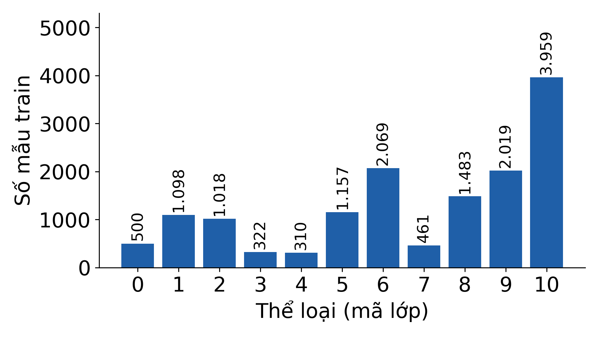
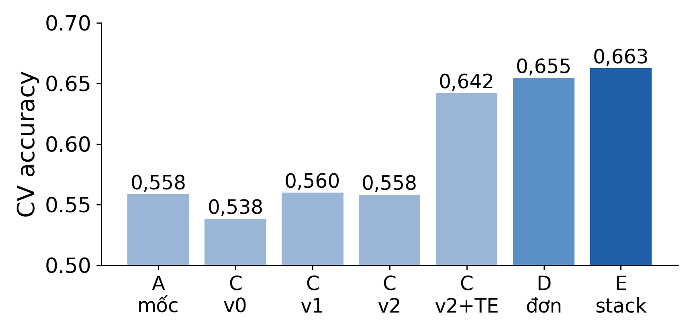
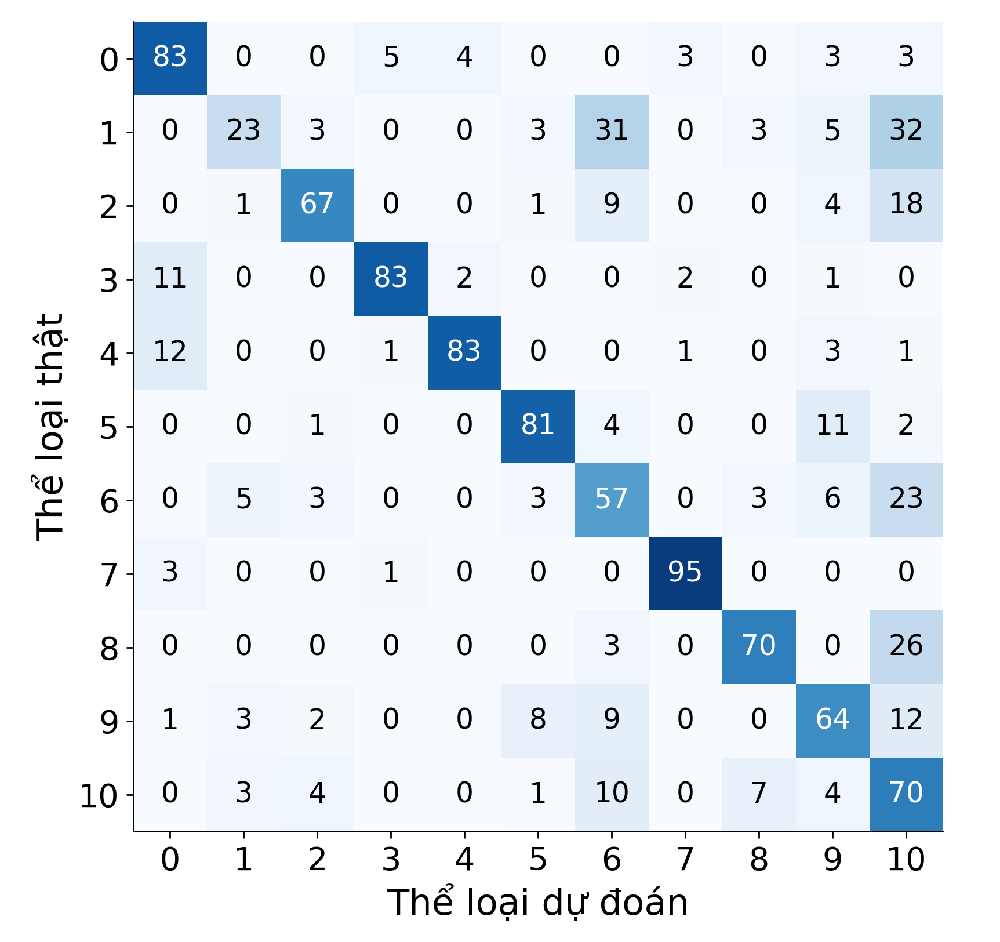
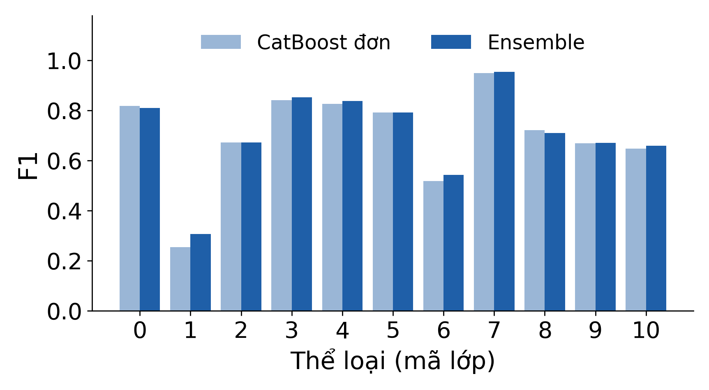
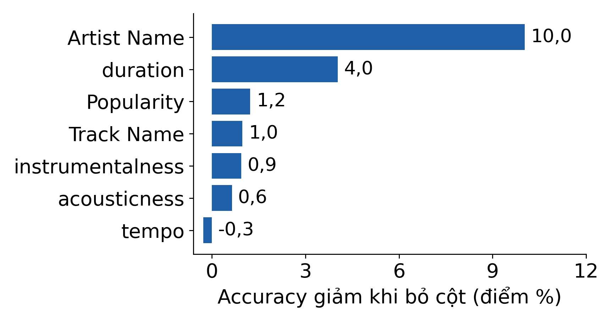

1. Bài toán và dữ liệu
- Dự đoán 11 thể loại (nhãn 0–10) của bài hát từ bảng đặc trưng kiểu Spotify; không có tệp âm thanh.
- 14.396 mẫu train, 3.600 mẫu test; thang chấm của cuộc thi: accuracy.
- Mất cân bằng: lớp 10 có 3.959 mẫu, lớp 4 chỉ 310 mẫu (lệch 12,8 lần).

Hình 1. Phân bố 11 lớp trong tập train.
2. Phát hiện từ EDA
- Thời lượng lẫn hai đơn vị: 14,4% dòng (2.075) tính bằng phút, còn lại bằng mili giây.
- Thiếu dữ liệu có quy luật: instrumentalness thiếu 24,6%, key 11,2%; tỉ lệ thiếu khác nhau theo thể loại.
- Nghệ sĩ có giá trị: 63,8% dòng test có nghệ sĩ đã xuất hiện ở train; nhiều nghệ sĩ có hơn một thể loại.
3. Tiền xử lý và đặc trưng
- Quy đổi thời lượng về một thang, giữ cờ “thuộc thang phút” và cờ thiếu dữ liệu.
- Biến đổi log, tỉ số và tương tác giữa các đặc trưng (v2).
- Artist Target Encoding có làm mịn, tính trong từng fold với OOF lồng bên trong để không rò rỉ nhãn.
| Phiên bản đặc trưng | CV acc. |
| v0 | 0,5383 |
| v1 | 0,5598 |
| v2 | 0,5581 |
| v2+TE | 0,6421 |
Bảng 1. CV accuracy của HistGB theo phiên bản đặc trưng (C): thông tin nghệ sĩ là bước nhảy lớn nhất.
4. Phương pháp
B · EDA, kiểm chứng dữ liệu
▼
C · Đặc trưng v0–v2 + Artist Target Encoding
▼
D · 7 mô hình, tuning Optuna, 5-fold phân tầng (seed 42)
▼
E · Ensemble và stacking trên xác suất OOF
- Mô hình nền: CatBoost, LightGBM, XGBoost, HistGB, MLP, SVM, ExtraTrees.
- Ensemble: trung bình, trọng số tối ưu, chọn tham lam, stacking (logistic và HistGB).
- Đánh giá nested: học trọng số/meta-learner trên 4 fold OOF, chấm trên fold còn lại.
5. Kết quả
| Mô hình / chiến lược | CV acc. |
| Mốc của A (HistGB v1) | 0,5585 |
| CatBoost đơn (D) | 0,6548 |
| Trung bình đều 7 mô hình | 0,6503 |
| Trung bình đều 3 boosting | 0,6575 |
| Stacking HistGB (chốt) | 0,6626 |
Bảng 2. CV accuracy (5 fold). Điểm ensemble là nested.

Hình 2. Accuracy CV qua các giai đoạn (trục bắt đầu từ 0,5).
- Stacking hơn CatBoost đơn +0,78 điểm % (CI 95%: +0,33 đến +1,24), hơn ở cả 5 fold.
- Kaggle: public 0,6885, private 0,6639 (nộp muộn), sát với nested CV 0,6623.
8. Kết luận và hạn chế
- Thông tin nghệ sĩ cải thiện nhiều hơn mọi lựa chọn mô hình; ensemble thêm khoảng 0,3–0,8 điểm %.
- Trung bình đều 7 mô hình thấp hơn mô hình đơn tốt nhất.
- Private 0,664 khớp CV 0,662; chưa kiểm tra nghệ sĩ mới.
6. Phân tích lỗi

Hình 3. Ma trận nhầm lẫn (% theo hàng).
- Lớp ít mẫu không bị bỏ qua: lớp 3 và 4 có F1 = 0,85 và 0,83; lớp 7 đạt 0,95.
- Khó nhất: lớp 1 (F1 0,31), lớp 6 (0,54); thường bị nhầm sang lớp 10, lớp lớn nhất.
- ExtraTrees yếu nhất khi đứng riêng (0,6164) nhưng bỏ nó đi thì ensemble giảm nhiều nhất (−0,85 điểm %): giá trị nằm ở sự đa dạng.

Hình 4. F1 theo thể loại: ensemble so với CatBoost đơn.
7. Cột nào quan trọng?

Hình 5. Bỏ từng cột rồi huấn luyện lại (HistGB, 5 fold).
- Artist Name quan trọng nhất (−10,0 điểm %), rồi duration (−4,0).
- Bỏ duration, F1 lớp 0 tụt từ 0,81 xuống 0,43: cờ đơn vị phút/ms tách nhóm lớp {0, 3, 4, 7}.